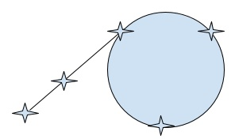

Factoring Numbers
Much of modern cryptography is founded on the difficulty of factoring numbers. Suppose we want to factorize \(n\). We can just check whether any of the numbers from \(2\) to \(n-1\) (indeed, up to \(\sqrt{n}\)) divides \(n\): if it does, then it’s a factor, and we recursively factor what’s left. So that just takes a linear amount of time! Why is this hard?
The problem is it’s linear in the “wrong” thing: the value of the number. However, the value of a number is, in a place notation, in the worst case exponential in its size. So we’d have to iterate until at least the square root of the exponential of the size, which is size divided by 2, which is in the same big-O class, i.e., exponential in the value. In general we don’t really know how to improve the worst-case performance of factorization, which is why contemporary cryptography works. (We discuss numbers elsewhere too [The Complexity of Numbers].)
In practice, it is useful to have factorization algorithms that terminate quickly. They obviously cannot be perfect; we have to compromise instead on accuracy in one way or another: reporting a non-prime as a prime, reporting a non-factor as a factor, etc.
One well-known algorithm is called Pollard’s rho algorithm. It will attempt to find a factor for a number. If it succeeds, we are guaranteed that what it found is indeed a factor. If it fails, however, we cannot be sure that the number is actually prime: there may be other factors lurking.
The algorithm gets its name from a picture that should be familiar from Detecting Cycles:

If you rotate that a little bit, you get the Greek letter \(\rho\). The similarity, as we will see in a moment, is not a coincidence.
Explaining the algorithm requires more number theory than we can cover here: if you’re interested, read more about it on Wikipedia. Instead, we will focus on the code.
First, we need a helper function that can compute the greatest common denominator:
fun gcd(a, b):
if b == 0:
a
else:
gcd(b, num-modulo(a, b))
end
endWith that, we can define the Pollard-rho implementation. Recall that
the function may or may not succeed in finding a factor (in particular,
it must fail when given a prime!), so we use an
Option
type to reflect the two possibilities:
fun pr(n):
fun g(x): num-modulo((x * x) + 1, n) end
fun loop(x, y, d):
new-x = g(x)
new-y = g(g(y))
new-d = gcd(num-abs(new-x - new-y), n)
ask:
| new-d == 1 then:
loop(new-x, new-y, new-d)
| new-d == n then:
none
| otherwise:
some(new-d)
end
end
loop(2, 2, 1)
endThe key step is the computation
g(x)
versus
g(g(x)).
We can imagine
x
is the tortoise, so
g(x)
is the tortoise’s update, while
y
is the hare, so
g(g(y))
is the hare’s update.
Try to run the above on the following values and see what it produces:
pr(6)
pr(14)
pr(35)
pr(37)
pr(41)
pr(8)
pr(44)In general, we can check the first few numbers and see how closely they match our intuition:
for map(n from range(2, 100)):
cases (Option) pr(n):
| none => num-to-string(n) + " may be prime"
| some(v) => num-to-string(n) + " has factor " + num-to-string(v)
end
endExercise
Do you see any patterns in the above output? Does it help you make any conjectures about the algorithm? Can you mathematically prove your conjectures?